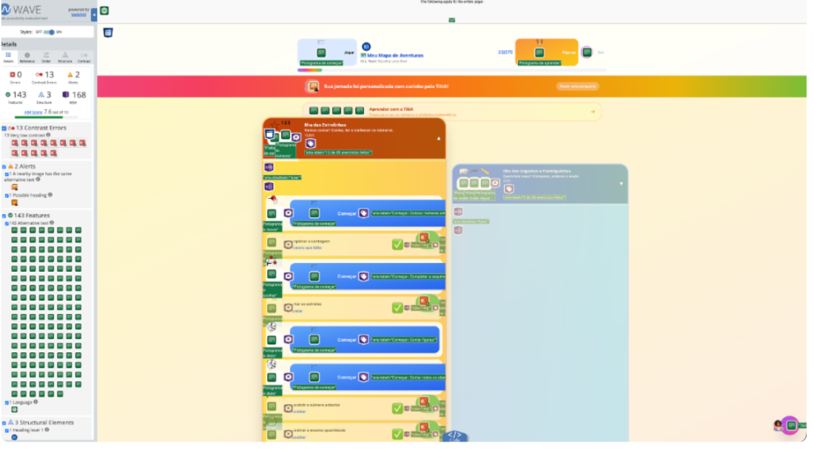
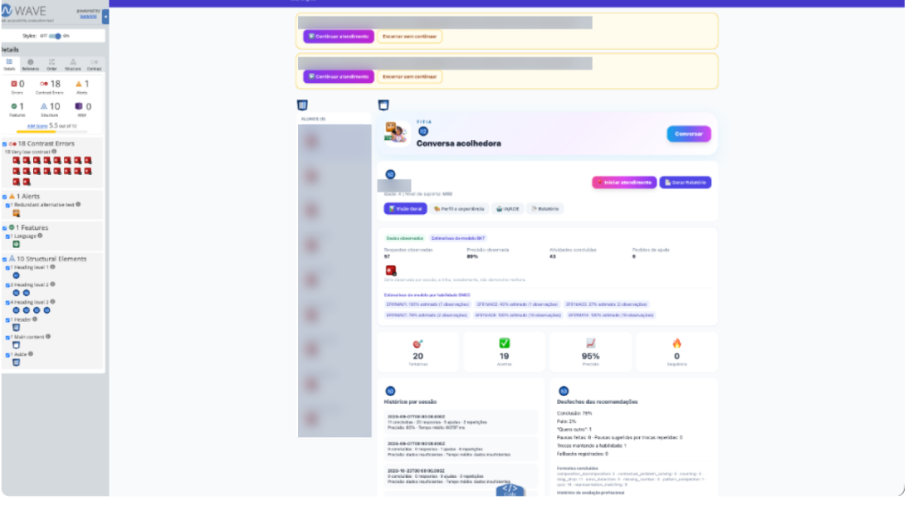
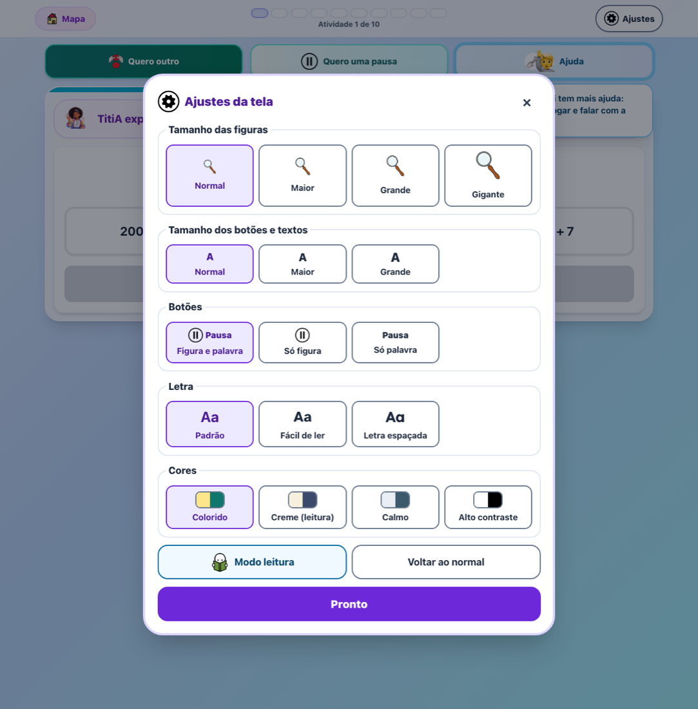
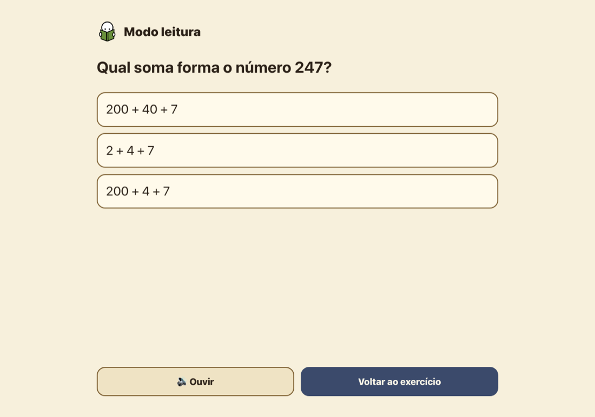
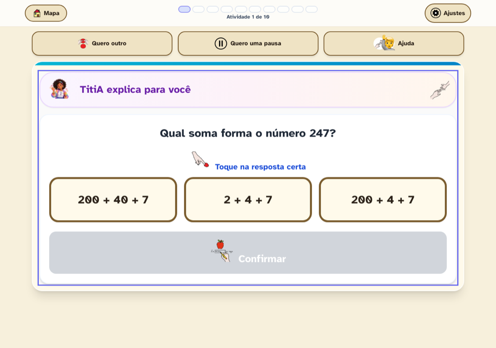
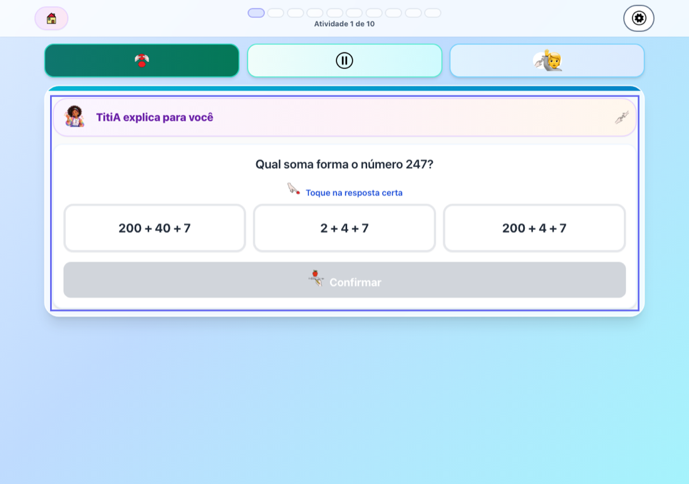
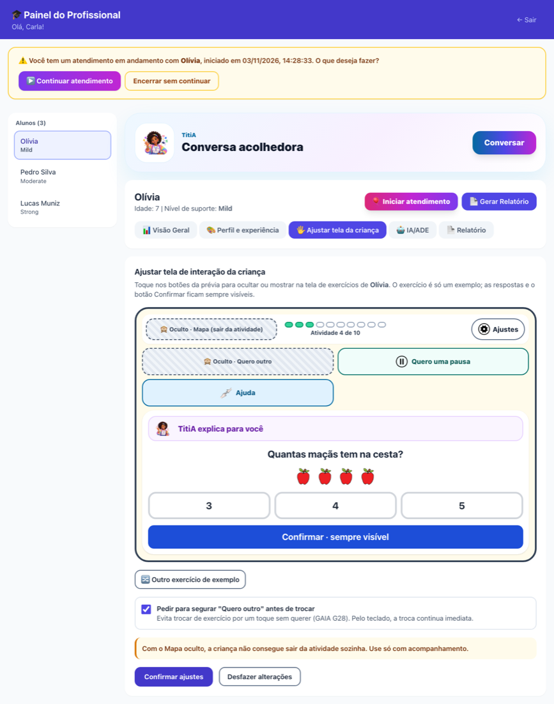
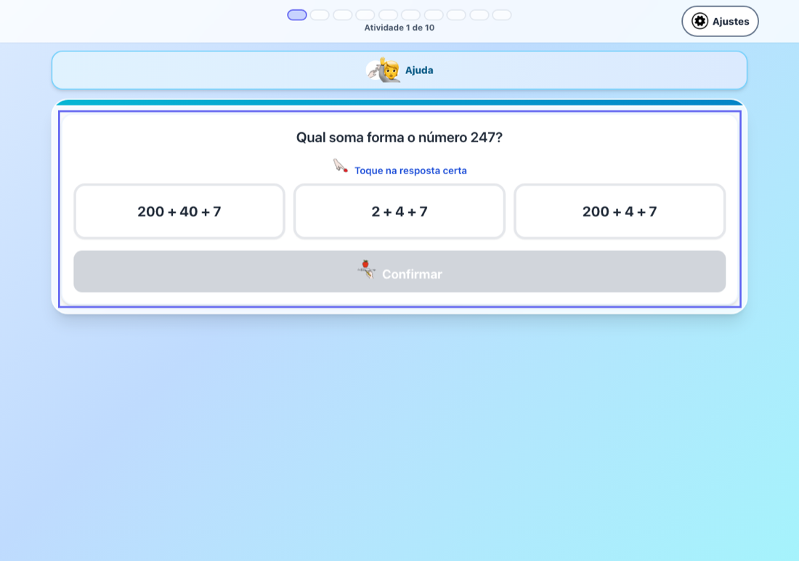
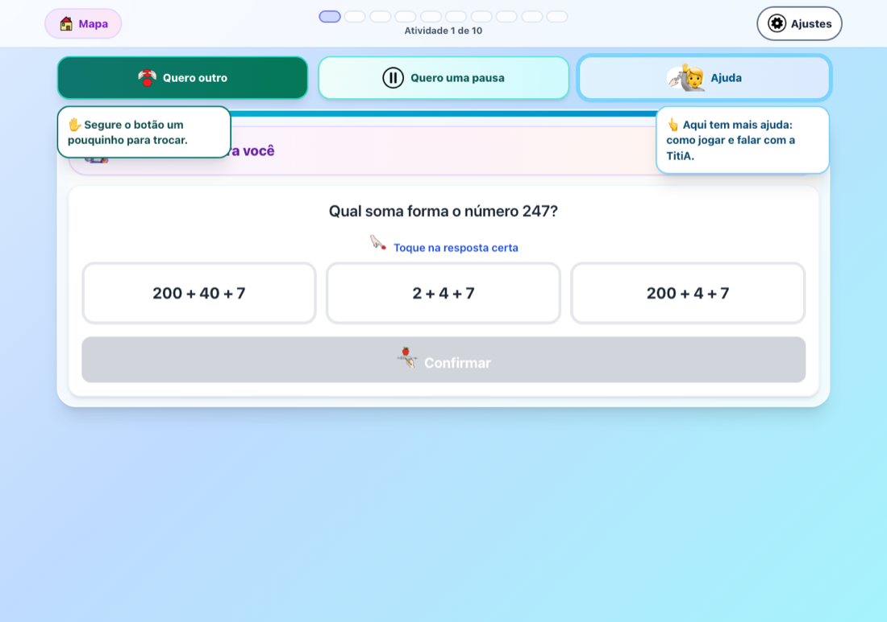

Mestrado · Conta Comigo · dossiê técnico · 20/11/2026
Registro do que foi feito, como foi verificado e o que pode entrar na dissertação: conformidade WCAG 2.2 AA, as 28 recomendações do GAIA, personalização da tela pela criança e pelo profissional, e a ontologia v0.6.0 com as 126 habilidades de Matemática da BNCC do 1º ao 5º ano.
Este dossiê é material-fonte para redigir trechos de uma dissertação de mestrado sobre o Conta Comigo, uma plataforma adaptativa de ensino de matemática para crianças autistas, alinhada à BNCC. Use-o assim:
docs/research/BATCH_17 e BATCH_18 do repositório, que são a fonte primária.Um comentário de professor sobre o trabalho questionou a acessibilidade da interface. A primeira rodada da ferramenta WAVE (WebAIM), em produção, encontrou dezenas de erros de contraste no mapa de ilhas e no painel do profissional (AIM score 7,6 e 5,5). As telas de exercício já estavam próximas do ideal (9,7–10). O objetivo do trabalho foi (a) eliminar os erros, (b) demonstrar conformidade com um método reproduzível, e não só com capturas de tela, e (c) cobrir as recomendações específicas para autismo do GAIA. Em paralelo, a ontologia curricular foi completada para todas as habilidades de Matemática dos anos iniciais.
| Tela | Erros | Erros de contraste | Alertas | AIM score |
|---|---|---|---|---|
| Exercício (quiz) | 0 | 0 | 1 (nível de título pulado) | 10 |
| Exercício com sugestão de pausa | 0 | 1 | 0 | 9,7 |
| Exercício com “Hora da pausa” | 0 | 1 | 0 | 9,7 |
Mapa de ilhas (/learn/menu) | 0 | 13 | 2 | 7,6 |
| Painel do profissional | 0 | 18 | 1 | 5,5 |
| Painel do profissional com a TitiA aberta | 0 | 18 | 1 | 5,5 |


As causas eram sistêmicas, e não pontuais: tons claros da paleta (slate-400, 2,56:1); botões com gradiente e texto branco sem cor de fundo sólida de reserva, que o WAVE mede contra o branco e que a WCAG exige; cartões esmaecidos com opacidade; indicadores de foco claros; bordas de campos quase invisíveis; e foco que escapava dos modais. Por isso, a correção também foi sistemática: um codemod elevou cada classe de cor ao primeiro tom da paleta que atinge a razão exigida, e todo gradiente ganhou uma cor sólida de reserva.
| Problema | Correção | Critério |
|---|---|---|
| Texto com contraste abaixo de 4,5:1 | Codemod que sobe cada classe de cor ao primeiro tom da paleta Tailwind com pelo menos 4,5:1 sobre slate-100, por exemplo slate-400 → slate-600 | 1.4.3 |
| Texto branco sobre gradiente | Toda classe bg-gradient-* ganhou cor sólida de reserva (bg-*); paradas de gradiente sob texto branco usam tons com pelo menos 4,5:1 | 1.4.3 |
| Indicador de foco | Anéis ring-*-200/300 passaram ao primeiro tom com pelo menos 3:1; contorno branco em botões sobre cabeçalhos escuros | 2.4.7, 1.4.11 |
| Borda de campos de formulário | slate-200/300 → slate-500 | 1.4.11 |
| Foco escapando de modal | useModalFocus devolve o foco ao diálogo quando ele está fora (por exemplo, depois de um clique no fundo) | 2.4.3, 2.4.11 |
Fundo do login como role="button" envolvendo o formulário | Fundo sem papel interativo; Escape fecha a partir de qualquer controle do diálogo | 4.1.2, 2.1.2 |
| Mesmo título “Conta Comigo” em todas as páginas | Título por rota, como “Painel do profissional · Conta Comigo” | 2.4.2 |
| Faixa animada sem fim no mapa | Uma única passada de 5 s, desligada com prefers-reduced-motion | 2.2.2 |
h3 sem h2 | “TitiA explica para você” passou a h2 | 1.3.1 |
| Campo nome sem finalidade | autocomplete="name" | 1.3.5 |
| Texto em caixa-alta com letras espaçadas | Removidos uppercase e tracking-wide* | GAIA G03 |
| Links externos sem aviso | Ícone ↗ visível e texto “(abre em nova aba)” para leitor de tela | GAIA G22 |
| Toque acidental em “Quero outro” descartava o exercício e registrava um pulo | Segurar 0,6 s com barra de progresso; toque curto mostra “Segure o botão um pouquinho”; teclado ativa na hora; o profissional pode desligar | GAIA G28, WCAG 2.1.1 |
| Toque duplo em “Confirmar” podia registrar duas tentativas | Uma resposta por vez enquanto a anterior é enviada | GAIA G28, G21 |
| “Encerrar atendimento” com um toque | Confirmação em duas etapas na própria barra | GAIA G20 |
| Sem personalização da tela pela criança | Engrenagem “Ajustes”: figuras, botões e textos, letra, cores, figura/palavra nos botões, modo leitura | GAIA G05, G06, G08, G17 |
| Profissional não podia simplificar a tela | Aba “Ajustar tela da criança”: prévia com exercício de exemplo, toque para ocultar e mostrar controles, confirmar | GAIA G07, G10 |
Nenhuma ferramenta automática cobre todos os critérios WCAG. A estimativa usual é que elas detectem só uma parte das barreiras. Por isso, a avaliação combinou quatro fontes de evidência:
frontend/e2e/a11y/audit.js) abre 39 telas no Chromium, com a API simulada por dados derivados das próprias seeds do sistema. Assim, telas autenticadas de criança, responsável e profissional renderizam sem banco de dados. O axe roda com as regras wcag2a, wcag2aa, wcag21a, wcag21aa e wcag22aa.As 39 telas cobrem: página inicial e diálogos de entrada e cadastro; mapa de ilhas; exercício; menu de ajuda; os dois modais de pausa; um exercício de cada um dos 8 formatos; configurações; painel do responsável; todas as abas do painel do profissional; e as variações de personalização (temas, letras, ampliação, botões só com figura ou só com palavra, controles ocultos, “segurar para trocar”).
npm run test:a11y: 39 de 39 telas sem violações, código de saída 0. Typecheck sem erros. A suíte de testes do frontend não ganhou nenhuma falha nova em relação ao main.
Nova rodada do WAVE em produção após o deploy, com as capturas por tela (o autor vai anexar). A meta é AIM ≥ 9,1 em todas as páginas, com 0 erros e 0 erros de contraste.
A tabela completa dos 56 critérios A e AA está no Apêndice A: situação, método de verificação e evidência no sistema. Resumo: 47 atendem, 8 não se aplicam (não há mídia gravada, só português, sem sensores de movimento, sem atalhos de uma tecla) e o 4.1.1 é obsoleto na versão 2.2.
A acessibilidade do Conta Comigo foi avaliada em relação aos critérios de nível A e AA das WCAG 2.2 (W3C, 2023) e às 28 recomendações do GAIA. A avaliação combinou quatro fontes de evidência. A primeira foi a execução automatizada do axe-core 4.12 por meio do Playwright em 25 telas da aplicação, cobrindo os perfis criança, responsável e profissional, os modais e os oito formatos de exercício, com dados simulados derivados das seeds do sistema. A segunda foram verificações complementares implementadas no mesmo script para critérios que o axe não automatiza: contraste no modelo do WAVE, fronteira de campos, indicador e visibilidade do foco por navegação real com Tab, espaçamento de texto e título por página. A terceira foi a extensão WAVE da WebAIM, aplicada em produção antes e depois das correções. A quarta foi a inspeção manual para critérios que dependem de julgamento.
O GAIA (gaia.wiki.br) organiza 28 recomendações em 10 categorias: vocabulário visual e textual, customização, engajamento, representações redundantes, multimídia, visibilidade do estado do sistema, reconhecimento e previsibilidade, navegabilidade, resposta às ações e interação com tela sensível ao toque. Ao contrário da WCAG, as recomendações são qualitativas; só duas trazem números: linhas de até 80 caracteres (G03) e até 5 tentativas antes de mostrar a resposta (G21). Na primeira avaliação, 6 recomendações eram atendidas só em parte (G03, G05, G06, G08, G17, G28). Elas foram fechadas com as funcionalidades da seção 4. Situação atual: 28 de 28 atendidas. A tabela completa está no Apêndice B.
Duas recomendações do GAIA já estavam implementadas no núcleo pedagógico, com citação explícita no código. A G21 revela a resposta a partir da 5ª tentativa errada, com a opção de tentar de novo. A G20 pede confirmação para sair de uma atividade. As novas funcionalidades tornaram verificáveis as recomendações de customização, que dependiam de opções visíveis à criança.
Um botão de engrenagem (pictograma ARASAAC 39466, “botão de configuração”) abre um diálogo com escolhas grandes, conduzidas por pictogramas e com prévia ao vivo. As escolhas ficam salvas no dispositivo:
zoom, de modo que o layout reflui em vez de sobrepor. Atende G17 e G05.



Uma nova aba do painel do profissional mostra uma réplica da tela de exercício com um exercício de exemplo sorteado. O profissional toca nos próprios botões da prévia para ocultá-los ou mostrá-los para aquela criança: Mapa, Progresso, Ajustes, “Quero outro”, “Quero uma pausa”, Ajuda e “TitiA explica”. Depois, ele confirma. As respostas e o botão Confirmar nunca podem ser ocultados. Ao ocultar o Mapa, um aviso explica que a criança não conseguirá sair da atividade sozinha. As escolhas ficam no perfil da criança (uiPreferences.hiddenControls) e valem em qualquer dispositivo. Atende G07 (interfaces flexíveis) e G10 (interface minimalista).


O GAIA sugere pressão longa para evitar ativações acidentais. Aplicá-la às respostas, porém, aumentaria o esforço motor, que é justamente o que a mesma recomendação pede para evitar. A solução foi aplicar a proteção só onde um toque acidental tem consequência:
touch-action: manipulation, sem zoom por toque duplo nem atraso de 300 ms.
Sugestão: apresentar a personalização em dois níveis, autonomia da criança (engrenagem) e mediação do profissional (editor da tela), como resposta direta às categorias de Customização e Engajamento do GAIA. A interação segura ilustra uma decisão de projeto: a recomendação foi aplicada de forma seletiva, ponderando G28 (evitar toques acidentais) contra o esforço motor e a WCAG 2.1.1 (teclado).
Que as personalizações reduzam trocas acidentais de exercício e a sobrecarga sensorial. Medir a taxa de “Quero outro” por sessão antes e depois da exigência de segurar, e o uso de cada opção da engrenagem, em observação com crianças e profissionais.
A ontologia ContaComigo (ontology/contacomigo/contacomigo.owl) é o núcleo semântico consultado pelo motor de seleção de exercícios. A versão 0.5.0 representava 75 das 126 habilidades de Matemática do 1º ao 5º ano. A versão 0.6.0 representa todas. Os textos oficiais e os objetos de conhecimento foram extraídos dos quadros do PDF oficial da BNCC e conferidos automaticamente: 126 de 126 descrições idênticas. Cada habilidade foi ligada a ano, unidade temática e conceitos matemáticos. A nova propriedade cc:hasKnowledgeObject registra o objeto de conhecimento.
| Ano | Habilidades BNCC de Matemática | Na ontologia v0.5.0 | Na ontologia v0.6.0 | Adicionadas |
|---|---|---|---|---|
| 1º ano | 22 | 6 | 22 | 16 |
| 2º ano | 23 | 12 | 23 | 11 |
| 3º ano | 28 | 17 | 28 | 11 |
| 4º ano | 28 | 21 | 28 | 7 |
| 5º ano | 25 | 19 | 25 | 6 |
| Total | 126 | 75 (59,5%) | 126 (100%) | 51 |
Parser RDF (rdflib): 4.460 triplas, nenhuma IRI não declarada. Testes do backend dos módulos de ontologia, ADE e atividades: 274/274 (eram 273, mais 1 teste novo). Suíte completa: 485 testes. Testes da fundação ontológica no frontend: 14/14. As 126 descrições do OWL foram conferidas de forma independente contra o arquivo oficial do repositório: 126 idênticas.
| Conceito novo | Superclasse | Habilidades | Alinhamento externo |
|---|---|---|---|
SpatialLocationConcept (localização e movimentação no espaço) | BasicGeometryConcept | EF01MA11, EF01MA12, EF02MA12, EF02MA13, EF03MA12, EF04MA16, EF05MA14 | nenhum (conceito local) |
ProbabilityConcept (acaso e probabilidade) | MathematicalConcept | EF01MA20, EF02MA21, EF03MA25, EF04MA26, EF05MA22, EF05MA23 | nenhum (a OntoMathEdu distribuída cobre geometria plana) |
CongruenceConcept (congruência de figuras planas) | BasicGeometryConcept | EF03MA16 | related a OntoMathEdu "Congruent geometric figures" |
SimilarityConcept (ampliação e redução) | BasicGeometryConcept | EF05MA18 | related a OntoMathEdu "Similar figures" |
| Relação | Situação | Trecho da BNCC |
|---|---|---|
SpatialLocationConcept → CoordinateLocationConcept | grounded_in_bncc_text | "diferentes representações para a localização de objetos no plano [...] a fim de desenvolver as primeiras noções de coordenadas cartesianas" (EF05MA14), depois de localização "por meio de malhas quadriculadas e representações como desenhos, mapas, planta baixa e croquis" (EF04MA16) |
ProportionalityConcept → SimilarityConcept | grounded_in_bncc_text | "a proporcionalidade entre os lados correspondentes de figuras poligonais em situações de ampliação e de redução" (EF05MA18) |
CongruenceConcept → SimilarityConcept | needs_professional_review | "Reconhecer figuras congruentes" (EF03MA16) e "a congruência dos ângulos" em ampliações e reduções (EF05MA18). Congruência de figuras e congruência de ângulos não são a mesma noção, por isso a relação depende de revisão profissional |
| Problema encontrado na v0.5.0 | Correção na v0.6.0 |
|---|---|
39 classes, 32 propriedades de objeto, 28 de dados, 11 de anotação e 47 indivíduos sem rótulo pt-BR; 24 indivíduos sem nenhum rótulo (famílias de atividade, perfis de dificuldade e relações de pré-requisito) | Toda entidade tem rótulo pt-BR; os 24 indivíduos ganharam rótulos en e pt-BR |
40 classes sem cc:conceptOrigin (camadas de conhecimento e conceitos matemáticos) | Todas as 98 classes têm origem: 17 aligned ontology concept, 41 literature-grounded ContaComigo concept, 32 engineering concept e 8 experimental construct |
cc:isAddressedByActivity tinha alcance LearningActivity, mas é o inverso de cc:addressesCurriculumSkill, cujo domínio é Activity. Um raciocinador classificaria qualquer ActivityFamilyProfile ligado a uma habilidade como LearningActivity | Alcance corrigido para cc:Activity |
A relação Prerequisite_MultiplicationToDivision citava EF04MA04 e EF04MA13, que não existiam como indivíduos | As duas habilidades agora existem |
| Conceitos geométricos locais com classe correspondente confirmada na OntoMathEdu, mas sem alinhamento | PolygonConcept, SymmetryConcept e CoordinateLocationConcept ganharam alinhamento related (seção 7) |
A decisão central para o artigo é que a ontologia ContaComigo é o núcleo executável, e as demais não são importadas: não há owl:imports nem owl:equivalentClass. Elas aparecem como pontes anotadas, com as quais cada entidade local declara de onde vem e com que força se relaciona com a fonte. Os valores são adapted, related, narrower e, no caso da LASDONT, adapted from, narrower than e related to. Isso evita afirmar equivalência lógica onde há apenas inspiração ou proximidade conceitual.
Figura 10 — Pontes de procedência. Linhas tracejadas são anotações, não importação.
| Fonte | Mecanismo de ponte | Valores usados |
|---|---|---|
| OntoMathEdu | cc:sourceOntology, cc:sourceIRI, cc:alignmentRelation, cc:alignmentNote | adapted (estrutura reinterpretada) ou related (conceito próximo, sem equivalência) |
| LASDONT | cc:historicalSourceOntology, cc:historicalSourceConcept, cc:historicalMappingType | adapted from, narrower than, related to |
| PROV-O | rdfs:subClassOf / rdfs:subPropertyOf + cc:alignmentRelation | narrower |
| BNCC | cc:sourceOntology em BNCCSkill + dcterms:source e texto oficial em cada habilidade | — |
| Própria | cc:conceptOrigin | literature-grounded ContaComigo concept, engineering concept, experimental construct |
| Entidade ContaComigo | Tipo | Relação | Entidade OntoMathEdu |
|---|---|---|---|
MathematicalConcept | classe | adapted | princípio da camada de domínio (sem classe homônima no artefato) |
DidacticRelation | classe | adapted | hasPrerequisite (propriedade de anotação no artefato) |
PrerequisiteRelation | classe | adapted | hasPrerequisite |
prerequisiteConcept | propriedade de objeto | adapted | hasPrerequisite |
CurriculumLevel | classe | adapted | EducationalLevel |
PointConcept | classe | related | R71GKMyesTQoOWWvX1M74EE — Point |
AngleConcept | classe | related | R9lMyAYbMeEYN0OdD7cbwZ6 — Angle |
SquareConcept | classe | related | R81puoDaG8DotyXihsGWNY6 — Square |
RectangleConcept | classe | related | R9x3QFCyHrHe0SoE3ZCZr94 — Rectangle |
PolygonConcept (v0.6.0) | classe | related | RDv25ipiTlBE1U108mKAvEj — Polygon |
SymmetryConcept (v0.6.0) | classe | related | RBZTpicxNM7cbhnJJ1IRNyX — Axial symmetry |
CoordinateLocationConcept (v0.6.0) | classe | related | R7YD3X6bHdrVh0Vfk3nEWoM — Cartesian coordinate system |
CongruenceConcept (nova) | classe | related | RLfTx5EJyjoizZm1ABPOwY — Congruent geometric figures |
SimilarityConcept (nova) | classe | related | RvAZM1LoovPjUxYGZ0pWvs — Similar figures |
| Entidade ContaComigo | Tipo | Conceito LASDONT | Mapeamento |
|---|---|---|---|
ObservedVisualStrength | classe | Visual_Strength | adapted from |
ObservedVisualPreference | classe | Visual_Strength | related to |
ObservedAuditoryStrength | classe | Auditive_Strength | adapted from |
ObservedAuditoryPreference | classe | Auditive_Strength | related to |
ObservedLogicalReasoningStrength | classe | Logical_Strength | narrower than |
ReasoningSupportNeed | classe | Logical_Weakness | adapted from |
MotorInteractionPreference | classe | Motor_Strength | related to |
MotorSupportNeed | classe | Motor_Weakness | adapted from |
MotorDemandCompatibility | classe | Motor_Weakness | narrower than |
SensoryLoadTolerance | classe | Sensory_Strength | adapted from |
SensorySupportNeed | classe | Sensory_Weakness | adapted from |
Activity (v0.6.0) | classe | Treatments_Class | related to |
QuizActivityType (v0.6.0) | indivíduo | Quizzes | adapted from |
VisualPuzzleActivityType (v0.6.0) | indivíduo | Visual_Puzzles | adapted from |
VideoQuestionActivityType (v0.6.0) | indivíduo | Question_Videos | related to |
YesNoActivityType (v0.6.0) | indivíduo | Yes_No_Videos | related to |
legacyDifficultyLabel (v0.6.0) | propriedade de dados | Easy_Content, Mid_Content, Hard_Content | related to |
Por que não dividir em módulos. A separação em núcleo + módulo OntoMathEdu + módulo LASDONT foi avaliada e descartada. O backend carrega um único arquivo e não resolve importações. Um teste do projeto exige que não haja owl:imports, decisão anterior de não importar as ontologias externas. As pontes são anotações sobre entidades locais, então um módulo separado não teria valor lógico próprio. O inventário pode ser regerado por consulta SPARQL sobre cc:sourceOntology e cc:historicalSourceOntology, o que dá ao artigo a mesma visão modular sem custo de manutenção.
A camada curricular da ontologia foi completada com as 126 habilidades de Matemática do 1º ao 5º ano da BNCC. Os textos das habilidades e os objetos de conhecimento foram extraídos dos quadros do documento oficial e conferidos automaticamente: as 126 descrições coincidem com o PDF. Cada habilidade foi ligada a um ano, a uma unidade temática, a um ou mais objetos de conhecimento e a conceitos matemáticos locais. Cada ligação habilidade–conceito foi anotada como análise semântica do projeto, e cada relação de pré-requisito entre conceitos cita o trecho da BNCC que a sustenta. A procedência de cada entidade foi registrada por anotações: alinhamentos adapted ou related com classes confirmadas da OntoMathEdu, rastreabilidade histórica com a LASDONT e subclasses de PROV-O. O arquivo foi validado com um parser RDF e com os testes automatizados do sistema.
A ontologia ContaComigo foi mantida como um único arquivo executável, sem importar a OntoMathEdu, a LASDONT ou o PROV-O. A relação com essas fontes é feita por anotações de procedência nas entidades locais, que distinguem adaptação, proximidade conceitual e predecessão histórica sem afirmar equivalência lógica. Conceitos novos só foram criados quando um conceito amplo já existente produziria relações de pré-requisito falsas no motor de seleção, e os mapeamentos das habilidades originais do 1º ano não foram alterados.
Os mapeamentos habilidade–conceito das 51 habilidades novas e duas das catorze relações de pré-requisito ainda não foram revisados por especialistas. Os conceitos locais de aritmética, medidas, dados e probabilidade não têm correspondente na release distribuída da OntoMathEdu, que cobre geometria plana. A BNCC associa objetos de conhecimento a linhas da tabela, e não a habilidades individuais, de modo que o objeto registrado para uma habilidade pode ser mais amplo que ela. A cobertura por exercícios continua baixa: 47 das 51 habilidades novas não têm exercício semeado.
Dois problemas impediam o cadastro de profissionais com Google:
/api. A correção é de ambiente: GOOGLE_REDIRECT_URI = https://<domínio atual>/api/auth/google/callback, também cadastrada no Google Cloud. Pendente, a cargo do autor.state do OAuth. Só “responsável” e “profissional” podem ser escolhidos.npm run test:a11y com 39 de 39 telas sem violações, anexada com a data e o commit.Registrar, por habilidade, quantas decisões do motor usaram o filtro semântico formal e quantas caíram no fallback legado, antes e depois da v0.6.0. Submeter os 51 mapeamentos novos e as relações marcadas como needs_professional_review a pelo menos dois especialistas em educação matemática e calcular a concordância entre eles. À medida que exercícios forem criados para as habilidades NOT_COVERED, verificar se as relações de pré-requisito derivadas da ontologia predizem a ordem em que as crianças atingem o domínio estimado pelo BKT.
| Capítulo | Conteúdo deste dossiê | Observação |
|---|---|---|
| Fundamentação teórica | WCAG 2.2 (níveis, critérios), GAIA (10 categorias, 28 recomendações), OntoMathEdu, LASDONT, PROV-O, BNCC | Citar as fontes primárias (seção 9) |
| Proposta / Desenvolvimento | Seções 4 (personalização em dois níveis, interação segura) e 5 (ontologia v0.6.0, pontes anotadas, Figura 10) | Destacar as decisões de projeto e seus motivos |
| Metodologia de avaliação | Seção 2.2 (quatro fontes de evidência, 39 telas, Figura de fluxo) | Descrever o script como instrumento reproduzível |
| Resultados | Tabela WAVE antes/depois; 39/39 telas; 47/56 WCAG; 28/28 GAIA; 126/126 BNCC | Incluir as capturas WAVE pós-deploy quando existirem |
| Limitações e trabalhos futuros | Seção 7 | Avaliação com usuários e revisão por especialistas |
| Apêndices | Tabelas completas (Apêndices A, B e C) | Podem ir integralmente |
fix/a11y-wcag-aa-google-signup)| Commit | Conteúdo |
|---|---|
710fd86 | Login com Google respeita o papel escolhido; diálogo de login sem controles aninhados |
6830d3e | Contraste WCAG AA em todas as telas; script de auditoria com axe-core |
4bca66a | Critérios AA restantes (títulos, foco, bordas, espaçamento) e lacunas GAIA; documento BATCH_17 |
3d64c35 | Engrenagem de ajustes, modo leitura, editor do profissional, interação segura (G28) |
d197d33 | Ontologia v0.6.0 (126 habilidades BNCC); documento BATCH_18 |
frontend/e2e/a11y/audit.js e generate-data.sh: instrumento de auditoria (npm run test:a11y).frontend/src/components/learner/child-display-settings.tsx: engrenagem e modo leitura.frontend/src/components/educator/child-screen-editor.tsx: editor do profissional.frontend/src/hooks/use-hold-to-activate.ts: segurar para ativar (G28).ontology/contacomigo/contacomigo.owl: ontologia v0.6.0.docs/research/BATCH_17_ACESSIBILIDADE_WCAG_GAIA_PT.md e BATCH_18_ONTOLOGIA_V06_BNCC_E_ALINHAMENTOS_PT.md: registros completos.Método: axe = regra automática do axe-core; script = checagem própria de audit.js; WAVE = extensão WebAIM; inspeção = revisão manual ou de código.
| Critério | Nível | Situação | Método | Evidência no Conta Comigo |
|---|---|---|---|---|
| 1.1.1 Conteúdo não textual | A | Atende | axe, WAVE, inspeção | Pictogramas ARASAAC com alt; imagens decorativas com alt=""; ícones com aria-hidden |
| 1.2.1 Somente áudio e somente vídeo (pré-gravado) | A | Não se aplica | inspeção | Não há áudio ou vídeo pré-gravado; a fala da TitiA lê texto já exibido |
| 1.2.2 Legendas (pré-gravado) | A | Não se aplica | inspeção | Sem vídeo |
| 1.2.3 Audiodescrição ou mídia alternativa | A | Não se aplica | inspeção | Sem vídeo |
| 1.3.1 Informações e relações | A | Atende | axe, WAVE | Landmarks header/main/aside, hierarquia de títulos, fieldset/legend, role="group", rótulos associados |
| 1.3.2 Sequência com significado | A | Atende | inspeção, script (Tab) | Ordem do DOM igual à ordem visual |
| 1.3.3 Características sensoriais | A | Atende | inspeção | Instruções em texto, pictograma e voz; nada depende só de forma ou posição |
| 1.4.1 Uso de cor | A | Atende | inspeção | “Concluído” com texto e ícone; seleção com aria-pressed e borda |
| 1.4.2 Controle de áudio | A | Atende | inspeção | Botão “Desligar música” na pausa; som, efeitos e voz configuráveis |
| 2.1.1 Teclado | A | Atende | script (Tab), inspeção | Controles são <button>; arrastar tem alternativa por toque ou clique |
| 2.1.2 Sem armadilha de teclado | A | Atende | script (Tab) | Modais prendem o foco, mas fecham com Escape ou botão |
| 2.1.4 Atalhos de teclado por caractere | A | Não se aplica | inspeção (código) | Não há atalhos de uma tecla; só Enter e Espaço no controle focado |
| 2.2.1 Tempo ajustável | A | Atende | inspeção | Sem limite de tempo; atraso da ajuda configurável pelo profissional |
| 2.2.2 Pausar, parar, ocultar | A | Atende | inspeção | Animação decorativa com no máximo 5 s; respeita prefers-reduced-motion e o modo de baixa estimulação |
| 2.3.1 Três flashes ou abaixo do limite | A | Atende | inspeção | Sem conteúdo piscante |
| 2.4.1 Ignorar blocos | A | Atende | axe | Landmark main em todas as telas; link “Pular para o conteúdo” na página inicial |
| 2.4.2 Página com título | A | Atende | axe, script | Título por rota, como “Meu mapa de aventuras · Conta Comigo” |
| 2.4.3 Ordem do foco | A | Atende | script (Tab) | Foco gerenciado em modais e devolvido ao fechar |
| 2.4.4 Finalidade do link (em contexto) | A | Atende | axe, inspeção | Nomes como “Começar: <título do exercício>” |
| 2.5.1 Gestos de ponteiro | A | Atende | inspeção, E2E | Toque simples substitui o arrastar (e2e/progression) |
| 2.5.2 Cancelamento de ponteiro | A | Atende | inspeção | Ações em click, ao soltar o ponteiro |
| 2.5.3 Rótulo no nome acessível | A | Atende | axe, inspeção | O nome acessível contém o texto visível, como “Confirmar resposta” |
| 2.5.4 Atuação por movimento | A | Não se aplica | inspeção | Não usa sensores de movimento |
| 3.1.1 Idioma da página | A | Atende | axe | <html lang="pt"> |
| 3.2.1 Em foco | A | Atende | script (Tab) | Receber foco não muda o contexto |
| 3.2.2 Em entrada | A | Atende | inspeção | Escolher uma opção só seleciona; envio com “Confirmar” |
| 3.2.6 Ajuda consistente | A | Atende | inspeção | Botões “Ajuda” e TitiA sempre na mesma posição |
| 3.3.1 Identificação de erro | A | Atende | inspeção | Mensagens em role="alert" |
| 3.3.2 Rótulos ou instruções | A | Atende | axe | Todos os campos têm rótulo |
| 3.3.7 Entrada redundante | A | Atende | inspeção | Cadastro em duas etapas mantém os dados já digitados |
| 4.1.1 Análise | A | Obsoleto na 2.2 | — | Sempre satisfeito (W3C, 2023) |
| 4.1.2 Nome, função, valor | A | Atende | axe, WAVE | aria-pressed, aria-modal, aria-labelledby; aninhamento interativo corrigido |
| 1.2.4 Legendas (ao vivo) | AA | Não se aplica | inspeção | Sem mídia ao vivo |
| 1.2.5 Audiodescrição (pré-gravado) | AA | Não se aplica | inspeção | Sem vídeo |
| 1.3.4 Orientação | AA | Atende | inspeção | Layout responsivo sem trava de orientação |
| 1.3.5 Identificar a finalidade da entrada | AA | Atende | inspeção | autocomplete com name, email, current-password, new-password |
| 1.4.3 Contraste (mínimo) | AA | Atende | axe, script (modelo WAVE), WAVE | 0 ocorrências nas 39 telas, inclusive nos temas creme, calmo e alto contraste |
| 1.4.4 Redimensionar texto | AA | Atende | inspeção | Tamanhos em rem; zoom não bloqueado no viewport |
| 1.4.5 Imagens de texto | AA | Atende | inspeção | Só o logotipo, que é exceção |
| 1.4.10 Refluxo | AA | Atende | E2E | Exercícios em 360 px sem rolagem horizontal (e2e/progression) |
| 1.4.11 Contraste não textual | AA | Atende | script | Fronteira de campos e indicador de foco com pelo menos 3:1 |
| 1.4.12 Espaçamento de texto | AA | Atende | script | Nenhum texto cortado com o espaçamento do critério |
| 1.4.13 Conteúdo em foco ou passagem do cursor | AA | Atende | inspeção | Só title nativo, sem conteúdo adicional |
| 2.4.5 Várias formas | AA | Atende | inspeção | Criança: mapa com todas as ilhas e exercícios, botão “Jogar” (próximo recomendado) e TitiA. Profissional: lista de alunos e abas |
| 2.4.6 Cabeçalhos e rótulos | AA | Atende | axe, inspeção | Títulos descrevem cada seção |
| 2.4.7 Foco visível | AA | Atende | script (Tab) | Contorno de 3 px com pelo menos 3:1 em todos os controles percorridos |
| 2.4.11 Foco não encoberto (mínimo) | AA | Atende | script (Tab) | Nenhum controle focado fica totalmente coberto |
| 2.5.7 Movimentos de arrastar | AA | Atende | E2E | Arrastar → tocar a peça e tocar o destino |
| 2.5.8 Tamanho do alvo (mínimo) | AA | Atende | inspeção | Controles principais com 44 px (min-h-11) ou mais |
| 3.1.2 Idioma das partes | AA | Não se aplica | inspeção | Conteúdo só em português |
| 3.2.3 Navegação consistente | AA | Atende | inspeção | Mesmo cabeçalho e controles em todas as telas do perfil |
| 3.2.4 Identificação consistente | AA | Atende | inspeção | Mesmo pictograma e nome para a mesma função |
| 3.3.3 Sugestão de erro | AA | Atende | inspeção | “N caracteres faltam”; conta já existente orienta a entrar |
| 3.3.4 Prevenção de erros (legais, financeiros, dados) | AA | Atende | inspeção | Termo LGPD confirmado explicitamente; “Sair da atividade?” pede confirmação |
| 3.3.8 Autenticação acessível (mínimo) | AA | Atende | inspeção | Gerenciador de senhas liberado (autocomplete), “Mostrar senha”, login com Google |
| 4.1.3 Mensagens de status | AA | Atende | inspeção | role="status" e aria-live="polite" nas mensagens |
| ID | Recomendação | Categoria | Situação | Evidência no Conta Comigo |
|---|---|---|---|---|
| G01 | Cores | Vocabulário visual e textual | Atende | Cor nunca é o único sinal; contraste validado (1.4.3, 1.4.11) |
| G02 | Textos | Vocabulário visual e textual | Atende | Frases curtas e diretas na área da criança. Siglas técnicas (BNCC, BKT, ADE) só no painel do profissional |
| G03 | Legibilidade | Vocabulário visual e textual | Atende | Fonte sem serifa (Inter, ou Atkinson Hyperlegible e Lexend na engrenagem); sem caixa-alta nem letras espaçadas; linhas de até 80 caracteres medidas automaticamente nas telas da criança |
| G04 | Compatibilidade com mundo real | Vocabulário visual e textual | Atende | Pictogramas ARASAAC de objetos e ações concretas; toque como gesto natural |
| G05 | Customização visual | Customização | Atende | Engrenagem “Ajustes” na tela de exercício: tamanho das figuras, tamanho de botões e textos, letra (padrão, Atkinson Hyperlegible, Lexend) e cores (colorido, creme, calmo, alto contraste); som, voz, volume e velocidade da fala pelo profissional |
| G06 | Customização informacional | Customização | Atende | Botões com figura e palavra, só figura ou só palavra (o nome acessível não muda); informação em texto, pictograma e voz; som e música opcionais |
| G07 | Interfaces flexíveis | Customização | Atende | Profissional define quantidade de elementos simultâneos e tipos de exercício indisponíveis; progresso salvo; ilha escolhida livremente |
| G08 | Modo de leitura | Customização | Atende | “Modo leitura” na engrenagem: só o enunciado e as opções, em letra grande e cores calmas, com botão “Ouvir”; relatório do profissional imprimível |
| G09 | Eliminar distrações | Engajamento | Atende | Animações desligáveis, prefers-reduced-motion, modo de baixa estimulação; animação decorativa com no máximo 5 s |
| G10 | Interface minimalista | Engajamento | Atende | Um exercício por tela, uma ação por vez |
| G11 | Organização visual | Engajamento | Atende | Cartões espaçados; elementos relacionados agrupados |
| G12 | Forneça instruções | Engajamento | Atende | “TitiA explica para você” em cada exercício; menu “Ajuda / Como jogar” |
| G13 | Múltiplos formatos | Representações redundantes | Atende | Enunciado em texto, pictograma e voz |
| G14 | Equivalentes textuais | Representações redundantes | Atende | Pictogramas com rótulo visível e alt |
| G15 | Legendas | Representações redundantes | Atende | TitiA lê instruções e opções em voz alta, sempre com o texto na tela |
| G16 | Múltiplas mídias | Multimídia | Atende | Avatar TitiA; ícone, palavra e som juntos |
| G17 | Ampliação de imagens | Multimídia | Atende | Pictogramas ampliáveis até 2× na engrenagem, com refluxo do layout (CSS zoom); pictogramas ARASAAC em alta resolução |
| G18 | Evite sons perturbadores | Multimídia | Atende | Tons curtos e de volume baixo; música calma opcional; efeitos desligáveis |
| G19 | Instruções de interação | Visibilidade do estado do sistema | Atende | Erros imediatos em linguagem simples; “Confirmar” desabilitado até haver escolha |
| G20 | Reverter ações | Visibilidade do estado do sistema | Atende | “Sair da atividade?” com confirmação; voltar ao mapa; “Quero outro” |
| G21 | Número de tentativas | Visibilidade do estado do sistema | Atende | Resposta revelada a partir da 5ª tentativa errada, com opção de tentar de novo (activities.service.ts) |
| G22 | Consistência | Reconhecimento e previsibilidade | Atende | Mesmos controles e comportamentos em todas as telas; links para nova aba sinalizados |
| G23 | Aparência clicável | Reconhecimento e previsibilidade | Atende | Botões grandes (44 px ou mais) com borda ou sombra |
| G24 | Feedback de interação | Reconhecimento e previsibilidade | Atende | Feedback imediato ao lado do elemento; estado disabled visível |
| G25 | Navegação simples | Navegabilidade | Atende | Navegação consistente; “Atividade X de Y” e barras de progresso; sair, mapa e ajuda sempre disponíveis |
| G26 | Evitar redirecionamentos | Navegabilidade | Atende | Sem redirecionamento automático nem limite de tempo nas tarefas |
| G27 | Confirmação de ações | Resposta às ações | Atende | Feedback imediato em texto, som e imagem, sem imagens de emoção negativa |
| G28 | Sensibilidade adequada | Interação com tela sensível ao toque | Atende | Resposta só vale após “Confirmar”; “Quero outro” exige segurar 0,6 s (configurável pelo profissional; teclado ativa na hora); toque duplo não envia a resposta duas vezes; touch-action: manipulation; “Encerrar atendimento” pede confirmação |
| Código | Unidade temática | Objeto(s) de conhecimento (texto oficial) | Conceitos (addressesMathematicalConcept) | Cobertura atual |
|---|---|---|---|---|
| EF01MA02 | Números | Quantificação de elementos de uma coleção: estimativas, contagem um a um, pareamento ou outros agrupamentos e comparação | CountingConcept | PARTIALLY_COVERED |
| EF01MA04 | Números | Leitura, escrita e comparação de números naturais (até 100) · Reta numérica | CountingConcept, NumberConcept | PARTIALLY_COVERED |
| EF01MA05 | Números | Leitura, escrita e comparação de números naturais (até 100) · Reta numérica | NumberConcept, ComparisonConcept | PARTIALLY_COVERED |
| EF01MA09 | Álgebra | Padrões figurais e numéricos: investigação de regularidades ou padrões em sequências | SequencePatternConcept, ComparisonConcept | NOT_COVERED |
| EF01MA10 | Álgebra | Sequências recursivas: observação de regras usadas utilizadas em seriações numéricas (mais 1, mais 2, menos 1, menos 2, por exemplo) | SequencePatternConcept | NOT_COVERED |
| EF01MA11 | Geometria | Localização de objetos e de pessoas no espaço, utilizando diversos pontos de referência e vocabulário apropriado | SpatialLocationConcept | NOT_COVERED |
| EF01MA12 | Geometria | Localização de objetos e de pessoas no espaço, utilizando diversos pontos de referência e vocabulário apropriado | SpatialLocationConcept | NOT_COVERED |
| EF01MA13 | Geometria | Figuras geométricas espaciais: reconhecimento e relações com objetos familiares do mundo físico | SpatialFigureConcept | PARTIALLY_COVERED |
| EF01MA15 | Grandezas e medidas | Medidas de comprimento, massa e capacidade: comparações e unidades de medida não convencionais | MeasurementConcept, ComparisonConcept | NOT_COVERED |
| EF01MA16 | Grandezas e medidas | Medidas de tempo: unidades de medida de tempo, suas relações e o uso do calendário | TimeMeasurementConcept | NOT_COVERED |
| EF01MA17 | Grandezas e medidas | Medidas de tempo: unidades de medida de tempo, suas relações e o uso do calendário | TimeMeasurementConcept | NOT_COVERED |
| EF01MA18 | Grandezas e medidas | Medidas de tempo: unidades de medida de tempo, suas relações e o uso do calendário | TimeMeasurementConcept | NOT_COVERED |
| EF01MA19 | Grandezas e medidas | Sistema monetário brasileiro: reconhecimento de cédulas e moedas | MoneyConcept | NOT_COVERED |
| EF01MA20 | Probabilidade e estatística | Noção de acaso | ProbabilityConcept | NOT_COVERED |
| EF01MA21 | Probabilidade e estatística | Leitura de tabelas e de gráficos de colunas simples | DataInterpretationConcept | NOT_COVERED |
| EF01MA22 | Probabilidade e estatística | Coleta e organização de informações · Registros pessoais para comunicação de informações coletadas | DataInterpretationConcept | NOT_COVERED |
| EF02MA02 | Números | Leitura, escrita, comparação e ordenação de números de até três ordens pela compreensão de características do sistema de numeração decimal (valor posicional e papel do zero) | CountingConcept | NOT_COVERED |
| EF02MA10 | Álgebra | Identificação de regularidade de sequências e determinação de elementos ausentes na sequência | SequencePatternConcept | NOT_COVERED |
| EF02MA12 | Geometria | Localização e movimentação de pessoas e objetos no espaço, segundo pontos de referência, e indicação de mudanças de direção e sentido | SpatialLocationConcept | NOT_COVERED |
| EF02MA13 | Geometria | Esboço de roteiros e de plantas simples | SpatialLocationConcept | NOT_COVERED |
| EF02MA16 | Grandezas e medidas | Medida de comprimento: unidades não padronizadas e padronizadas (metro, centímetro e milímetro) | MeasurementConcept | NOT_COVERED |
| EF02MA17 | Grandezas e medidas | Medida de capacidade e de massa: unidades de medida não convencionais e convencionais (litro, mililitro, cm³, grama e quilograma) | MeasurementConcept | NOT_COVERED |
| EF02MA19 | Grandezas e medidas | Medidas de tempo: intervalo de tempo, uso do calendário, leitura de horas em relógios digitais e ordenação de datas | TimeMeasurementConcept | NOT_COVERED |
| EF02MA20 | Grandezas e medidas | Sistema monetário brasileiro: reconhecimento de cédulas e moedas e equivalência de valores | MoneyConcept | NOT_COVERED |
| EF02MA21 | Probabilidade e estatística | Análise da ideia de aleatório em situações do cotidiano | ProbabilityConcept | NOT_COVERED |
| EF02MA22 | Probabilidade e estatística | Coleta, classificação e representação de dados em tabelas simples e de dupla entrada e em gráficos de colunas | DataInterpretationConcept | NOT_COVERED |
| EF02MA23 | Probabilidade e estatística | Coleta, classificação e representação de dados em tabelas simples e de dupla entrada e em gráficos de colunas | DataInterpretationConcept | NOT_COVERED |
| EF03MA05 | Números | Procedimentos de cálculo (mental e escrito) com números naturais: adição e subtração | AdditionConcept, SubtractionConcept, EarlyProblemSolvingConcept | NOT_COVERED |
| EF03MA12 | Geometria | Localização e movimentação: representação de objetos e pontos de referência | SpatialLocationConcept | NOT_COVERED |
| EF03MA16 | Geometria | Congruência de figuras geométricas planas | CongruenceConcept | NOT_COVERED |
| EF03MA17 | Grandezas e medidas | Significado de medida e de unidade de medida | MeasurementConcept | NOT_COVERED |
| EF03MA19 | Grandezas e medidas | Medidas de comprimento (unidades não convencionais e convencionais): registro, instrumentos de medida, estimativas e comparações | MeasurementConcept | NOT_COVERED |
| EF03MA20 | Grandezas e medidas | Medidas de capacidade e de massa (unidades não convencionais e convencionais): registro, estimativas e comparações | MeasurementConcept | NOT_COVERED |
| EF03MA21 | Grandezas e medidas | Comparação de áreas por superposição | AreaPerimeterConcept | NOT_COVERED |
| EF03MA25 | Probabilidade e estatística | Análise da ideia de acaso em situações do cotidiano: espaço amostral | ProbabilityConcept | NOT_COVERED |
| EF03MA26 | Probabilidade e estatística | Leitura, interpretação e representação de dados em tabelas de dupla entrada e gráficos de barras | DataInterpretationConcept, EarlyProblemSolvingConcept | NOT_COVERED |
| EF03MA27 | Probabilidade e estatística | Leitura, interpretação e representação de dados em tabelas de dupla entrada e gráficos de barras | DataInterpretationConcept | NOT_COVERED |
| EF03MA28 | Probabilidade e estatística | Coleta, classificação e representação de dados referentes a variáveis categóricas, por meio de tabelas e gráficos | DataInterpretationConcept | NOT_COVERED |
| EF04MA04 | Números | Propriedades das operações para o desenvolvimento de diferentes estratégias de cálculo com números naturais | AdditionConcept, SubtractionConcept, MultiplicationConcept, DivisionConcept | NOT_COVERED |
| EF04MA05 | Números | Propriedades das operações para o desenvolvimento de diferentes estratégias de cálculo com números naturais | AdditionConcept, MultiplicationConcept | NOT_COVERED |
| EF04MA13 | Álgebra | Relações entre adição e subtração e entre multiplicação e divisão | AdditionConcept, SubtractionConcept, MultiplicationConcept, DivisionConcept | NOT_COVERED |
| EF04MA16 | Geometria | Localização e movimentação: pontos de referência, direção e sentido · Paralelismo e perpendicularismo | SpatialLocationConcept | NOT_COVERED |
| EF04MA24 | Grandezas e medidas | Medidas de temperatura em grau Celsius: construção de gráficos para indicar a variação da temperatura (mínima e máxima) medida em um dado dia ou em uma semana | MeasurementConcept, DataInterpretationConcept | NOT_COVERED |
| EF04MA26 | Probabilidade e estatística | Análise de chances de eventos aleatórios | ProbabilityConcept | NOT_COVERED |
| EF04MA28 | Probabilidade e estatística | Diferenciação entre variáveis categóricas e variáveis numéricas · Coleta, classificação e representação de dados de pesquisa realizada | DataInterpretationConcept | NOT_COVERED |
| EF05MA14 | Geometria | Plano cartesiano: coordenadas cartesianas (1º quadrante) e representação de deslocamentos no plano cartesiano | CoordinateLocationConcept, SpatialLocationConcept | NOT_COVERED |
| EF05MA18 | Geometria | Ampliação e redução de figuras poligonais em malhas quadriculadas: reconhecimento da congruência dos ângulos e da proporcionalidade dos lados correspondentes | SimilarityConcept, PolygonConcept, AngleConcept, ProportionalityConcept | NOT_COVERED |
| EF05MA21 | Grandezas e medidas | Noção de volume | MeasurementConcept, SpatialFigureConcept | NOT_COVERED |
| EF05MA22 | Probabilidade e estatística | Espaço amostral: análise de chances de eventos aleatórios | ProbabilityConcept | NOT_COVERED |
| EF05MA23 | Probabilidade e estatística | Cálculo de probabilidade de eventos equiprováveis | ProbabilityConcept | NOT_COVERED |
| EF05MA25 | Probabilidade e estatística | Leitura, coleta, classificação interpretação e representação de dados em tabelas de dupla entrada, gráfico de colunas agrupadas, gráficos pictóricos e gráfico de linhas | DataInterpretationConcept | NOT_COVERED |